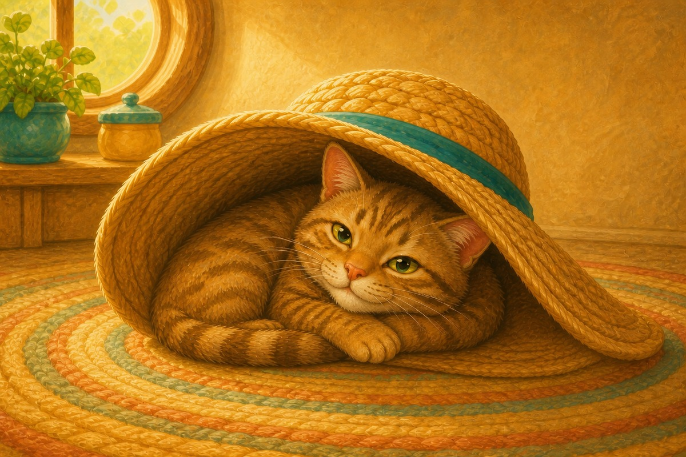
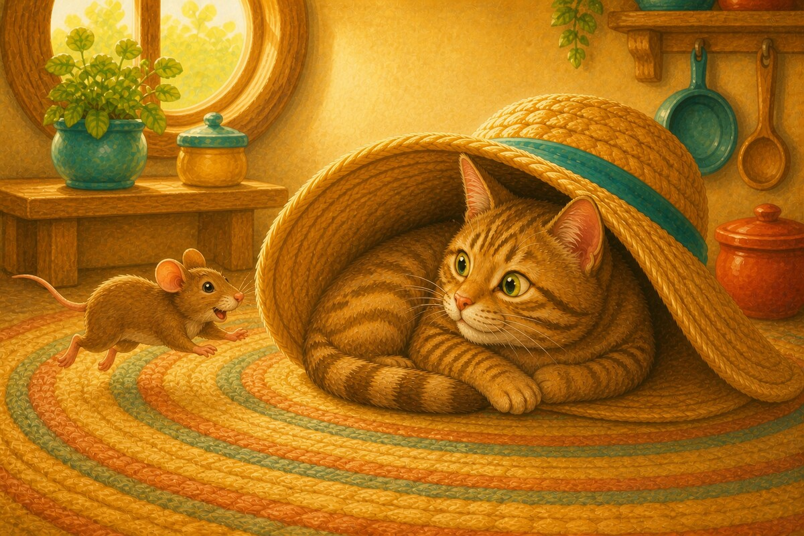
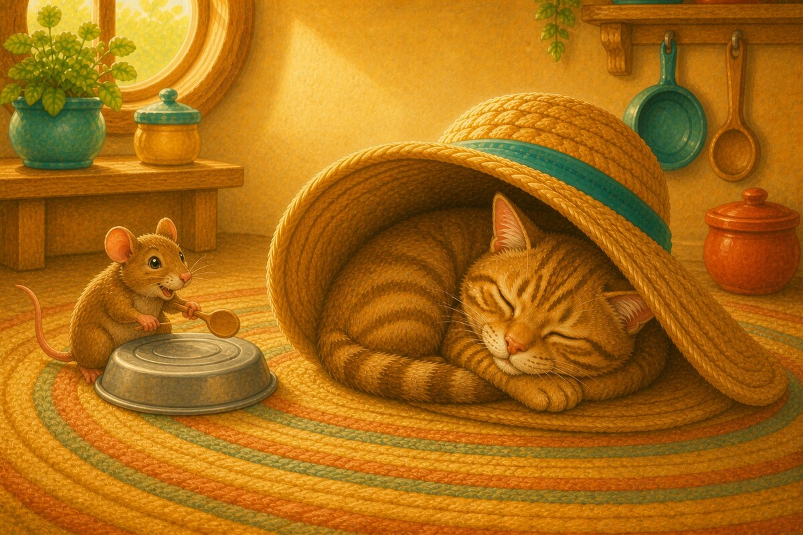
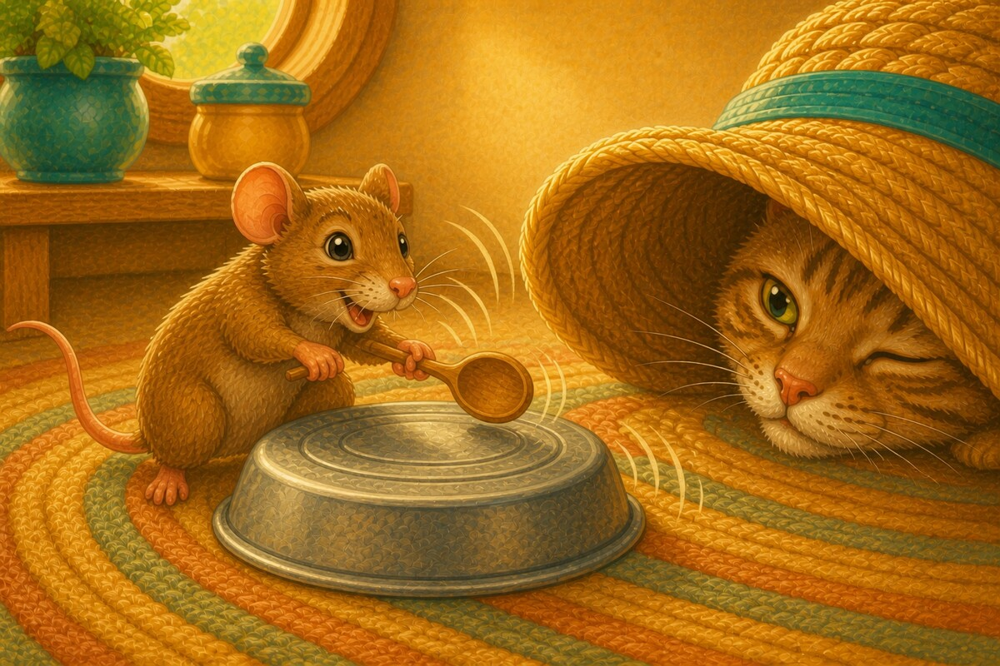
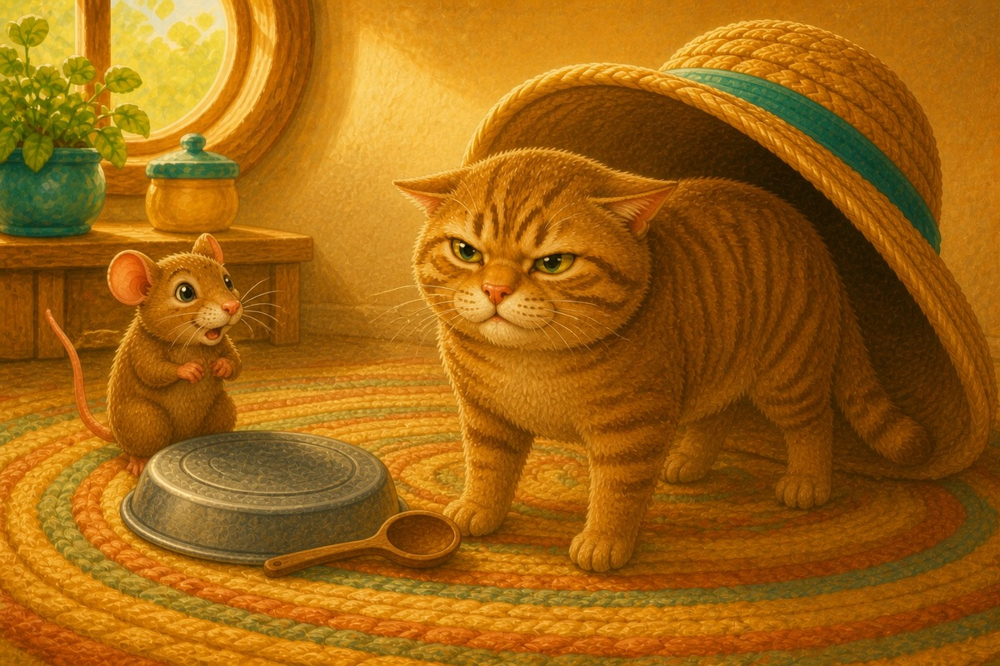
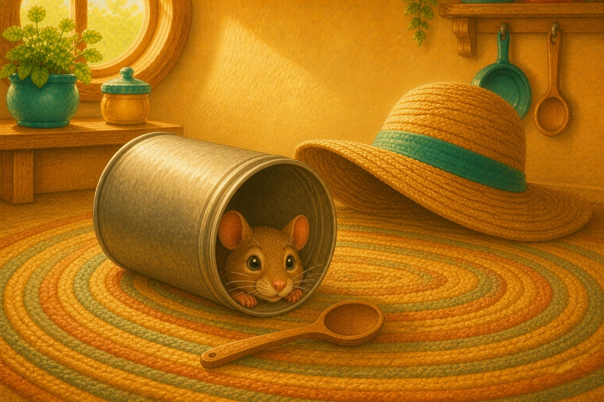
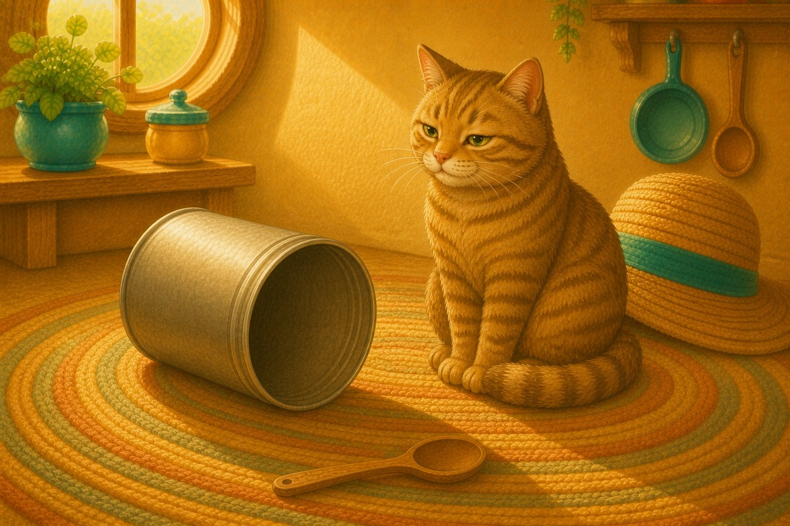
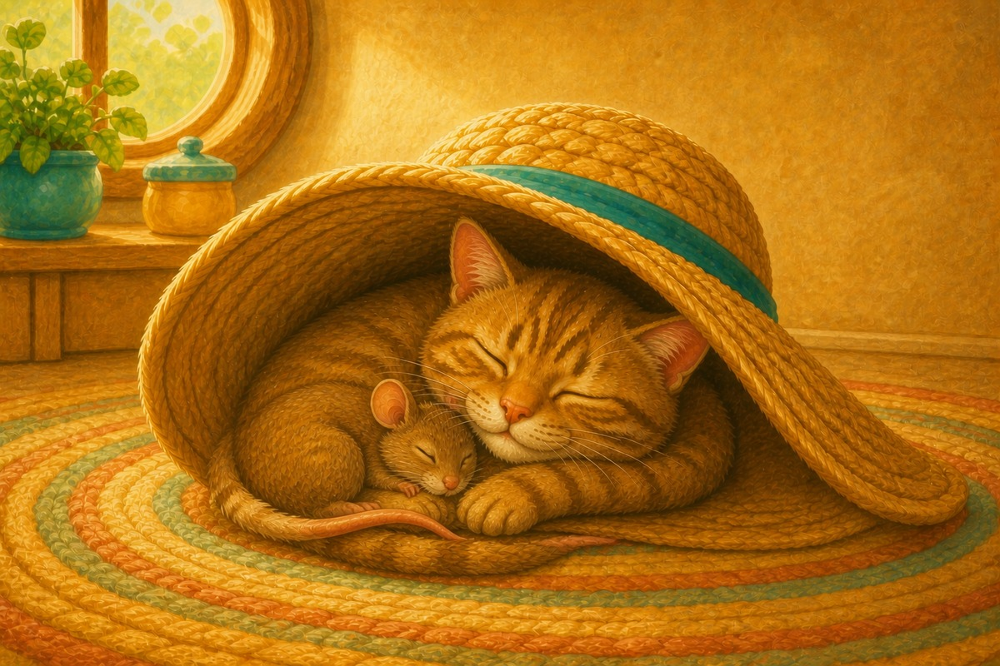

Page 1 of 8
A cat sat in a hat.
A 8-page Stage 2 sound practice story. Prepare the declared exceptions together before your reader tries the words.
10 printed pages · 2.5 MB · A4 or US Letter. Download PDF · Open PDF to printOpens in a new tab. Use the PDF viewer's Print control. To use less ink, read online and choose only the questions on page 10 in Print.


A cat sat in a hat.

A rat ran at the cat.

The cat can nap. The rat can tap.

Tap, tap, tap!

The cat is mad.

The rat hid in a can.

The cat sat and sat.

The rat and the cat nap in the hat!
In a can. Can you sound out c-a-n?
Review the preparation note and word lists above.
SnackPack ABC & Alphabet continues with letter activities, read-together stories and more early phonics practice.
Next phonics stage · when readyBug in a Cup
Explore another book · read togetherBaby Bulldogs at the Playground
Know a family or class who would enjoy it?